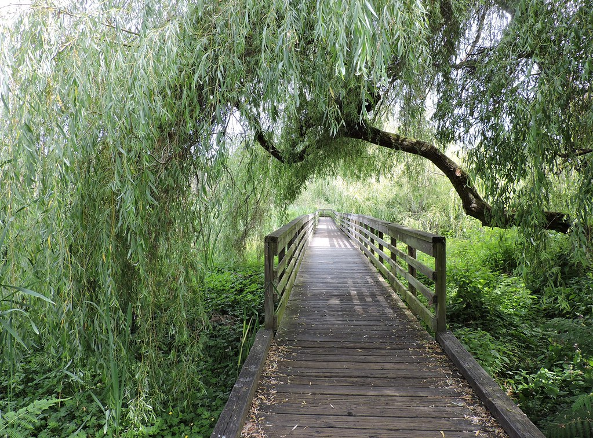

| Common name of Fauna | Class | Family | Source |
|---|---|---|---|
| Dunlin | Aves | Scolopacidae | Inaturalist.org |
| Long-Billed Dowitcher | Aves | Scolopacidae | Inaturalist.org |
| Horned Grebe | Aves | Podicipedidae | Inaturalist.org |
| Killdeer | Aves | Charadriidae | Inaturalist.org |
| Rufous Hummingbird | Aves | Trochilidae | Inaturalist.org |
| Trumpeter Swan | Aves | Antidae | Inaturalist.org |
| Oregon Ash | Magnoliopsida | Oleaceae | Inaturalist.org |
| Horse-Chestnut | Magnoliopsida | Sapindaceae | Inaturalist.org |